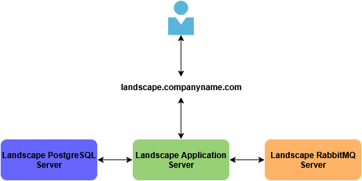

Overview
Designed and implemented a Canonical Landscape-based patch management platform to support PCI-compliant infrastructure. The solution centralized package repository control, enforced lifecycle-based patch promotion, and enabled automated update orchestration across enterprise Linux systems.
Key Highlights
- Designed a centralized patch management platform using Canonical Landscape
- Implemented lifecycle-based package promotion (dev → test → prod)
- Built automated patching workflows aligned to enterprise maintenance windows
- Architected a 3-tier Landscape deployment with separated application, database, and messaging layers
- Enabled PCI-compliant patching and update governance across Linux infrastructure
- Reduced manual patching effort through automation and orchestration
Security Topics
Automation accounts were scoped carefully because patch orchestration tools can perform privileged actions such as package changes and system restarts. Access to credentials and execution paths was restricted using least-privilege controls.
Patching Strategy
A structured patching lifecycle was implemented to ensure stability and compliance:
- Dev: Monthly package ingestion and validation
- Test: Controlled promotion and validation of updates
- Prod: Coordinated rollout following validation cycles
Security updates were prioritized weekly, while full updates followed a quarterly promotion model.
All updates were automated and orchestrated to minimize manual intervention and reduce operational risk.
Architecture Diagram

Click diagram to enlarge.
Architecture Explanation
The Landscape platform was deployed using a 3-server architecture, separating the application, PostgreSQL database, and RabbitMQ messaging components for scalability and resource isolation. Landscape served as a centralized repository and orchestration layer, allowing systems to receive controlled package updates based on defined lifecycle stages.
Challenges and Solutions
-
Problem: Lack of centralized patch management across systems
Solution: Implemented Landscape as a single source of truth for package distribution and updates -
Problem: Risk of unstable updates impacting production systems
Solution: Designed a lifecycle-based promotion model (dev → test → prod) -
Problem: Manual patching processes were inconsistent and time-consuming
Solution: Automated patch orchestration using Landscape scheduling and API-driven workflows -
Problem: PCI compliance required controlled and auditable patching
Solution: Established structured patch windows and enforced update governance through Landscape
Outcome
Delivered a scalable and compliant patch management platform that centralized update control across Linux systems. Improved patch consistency, reduced operational overhead, and enabled controlled, auditable update processes aligned with PCI requirements.